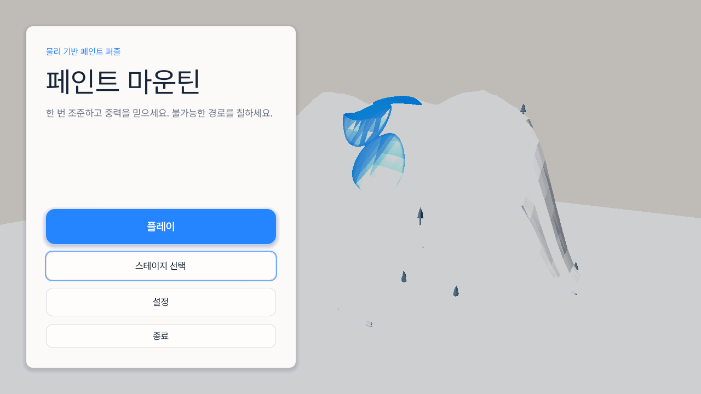
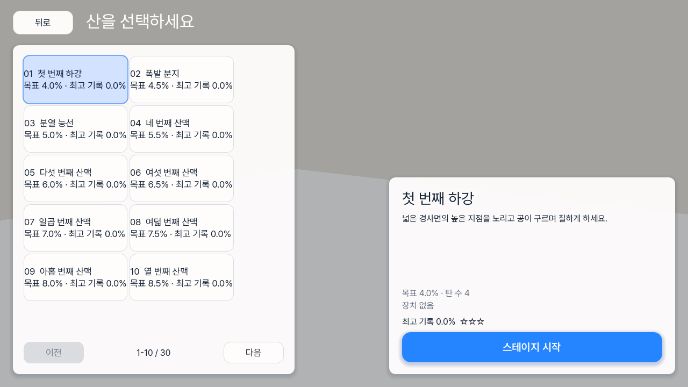
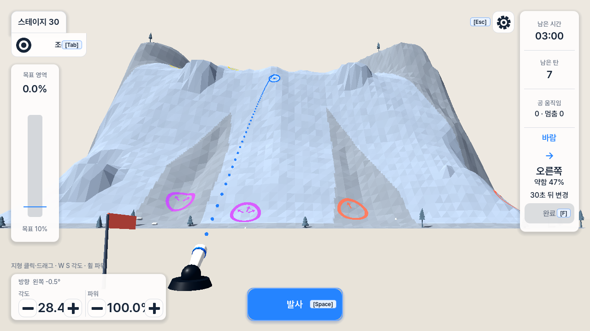
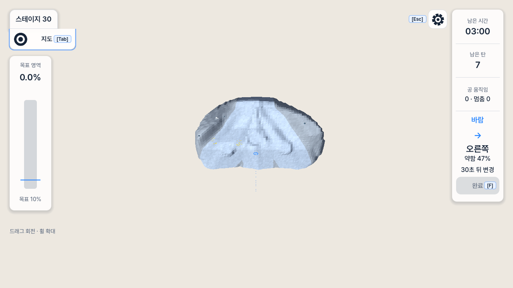
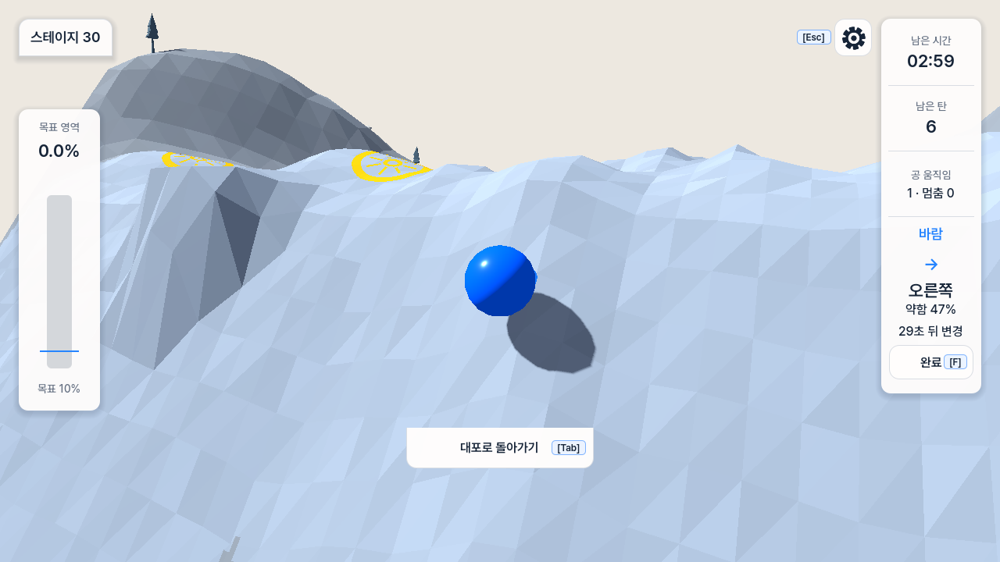

정확도를 덜어내고
판단과 피드백을 빠르게
현재 문제는 단순한 UI 미감이 아니다. 플레이어에게는 “대충 어디에 떨어질지 보고 쏘는” 게임인데, 구현은 “선택한 3D 지점에 정확히 닿는 해를 먼저 증명하는” 도구처럼 커졌다.
핵심 진단
1. 퍼즐의 질문이 흐려졌다
어디에 쏠까?보다 “선택한 점의 정확한 역산이 끝났나?”가 앞선다. 실패와 오차를 학습하는 물리 퍼즐이 정확한 좌표 선택기로 바뀌었다.
2. 매 입력이 계산 계약이 됐다
지형 클릭, 드래그, 각도·파워 변경이 모두 새 역산 요청을 만든다. 확정 전에는 Fire도 막힌다. 프레임당 일을 줄였어도 사용자는 완료까지 기다린다.
3. 화면은 많지만 정보는 약하다
카드·레일·숫자는 많은데 목표 영역, 산의 경로, 마지막 착탄, 남은 도색 기회는 빠르게 읽히지 않는다. HUD가 세계보다 더 설계돼 보인다.
4. 3D 장점도 제대로 쓰지 못한다
Aim View는 작은 삼각형이 만든 노이즈가 크고, Map View는 산을 너무 작게 만든다. Shot Follow는 공이 화면을 지배해 접촉·도색의 원인과 결과가 끊긴다.
현재 흐름 — 새 실행 캡처





탄착 계산이 느리게 느껴지는 이유
현재 일반 미리보기는 이미 프레임당 약 1ms로 잘게 나뉘었다. 병목의 핵심은 새 지형 목표 역산이다.
| 코드 사실 | 플레이 경험 영향 |
|---|---|
TrajectoryPredictionJob.MAXIMUM_STEPS = 720 | 한 후보가 최대 12초 탄도를 훑는다. |
TerrainAimSolver.MAXIMUM_NOMINATIONS = 6 | 앞 후보가 실패하면 다음 후보 검증이 이어진다. |
| 프레임당 12 step / 약 1ms | 멈춤은 줄지만 전체 확정 지연은 남는다. |
| 테스트 확정 한도 240 physics ticks | 60Hz 기준 최대 4초도 테스트상 성공이다. UX 기준이 없다. |
| Human revision pending 동안 Fire 비활성 | 계산은 “참고 정보”가 아니라 조작의 잠금장치다. |
질문에 대한 답: Top View 그리드가 더 빠른가?
| 현재 방식 | 권장 방식 | |
|---|---|---|
| 표시 | 정확한 3D 접촉점 링 | Top View의 착탄 원/타원 + 오차 범위 |
| 계산 | 역산 후보 + 후보별 실제 충돌 검사 | 20–40개 탄도 샘플 + 기존 표면 높이 조회 |
| 입력 반응 | 확정까지 pending | 입력 프레임에 즉시 갱신 |
| Fire | 명시적 목표 계산 중 잠김 | 항상 유효한 yaw/elevation/power면 발사 가능 |
| 정확성 | 발사 전 약속 | 오차를 게임의 판단 요소로 수용 |
그리드는 새 점수 진실이 되면 안 된다. 기존 PaintSystem 마스크와 target_mask를 축소해 보여주는 읽기 전용 지도여야 한다.
권장 경험 리셋
A · 계획은 Top View, 결과는 3D — 권장
- 기본 조준 화면을 정사영 Top View 지도 중심으로 바꾼다.
- 목표 영역, 현재 페인트, 기믹, 마지막 착탄을 한 지도에 겹친다.
- yaw/elevation/power를 조정하면 예상 착탄 타원이 즉시 움직인다.
- 발사 후에만 3D Shot Follow로 전환하고, 착탄·도색 후 지도에 자동 복귀한다.
B · 3D 조준 유지 + 작은 Top Map
- 현재 3D Aim View는 유지한다.
- 오른쪽 상태 카드 대신 240–320px 지도 오버레이를 둔다.
- 정확 목표 역산은 제거하고 근사 착탄 타원을 즉시 표시한다.
- 정확 궤적은 입력이 150ms 이상 멈췄을 때만 참고로 갱신한다.
우선순위 해결안
정확 목표 역산을 정상 플레이에서 제거
TerrainAimSolver 결과가 Fire를 막지 않게 하고, 입력 즉시 근사 표시를 갱신한다. 실패 가능한 샷을 허용한다.
Map View를 실제 계획 도구로 재정의
현재의 작은 산+빈 화면을 버리고, 목표/페인트/기믹/착탄 이력을 읽는 2.5D 보드로 만든다.
HUD를 한 줄 상태 + 한 줄 조작으로 축소
스테이지, 시간, 탄, 바람, 완료를 상단 한 줄로 묶고, 하단에는 각도·파워·Fire만 남긴다. 모드 카드와 중복 패널을 없앤다.
산을 ‘작은 삼각형’이 아니라 ‘큰 경로 덩어리’로 디자인
삼각형 밀도와 명암 노이즈를 줄이고, 테라스·능선·분기·목표 영역을 큰 형태와 값 차이로 읽게 한다.
착탄 피드백을 공보다 페인트 중심으로
카메라 거리를 늘리고 접촉점, 진행 방향, 새로 칠한 구간을 0.5–0.8초 강조한다. 마지막 샷의 착탄·도색량을 지도에 남긴다.
메뉴와 스테이지 선택 재구성
큰 빈 패널을 줄이고 스테이지 카드에 실루엣 썸네일, 기믹 아이콘, 목표, 최고 기록을 보여준다.
외부 패턴에서 가져올 것만
- Worms: 조준 중에도 카메라를 직접 움직이고 확대/축소할 수 있다. “조준”과 “관찰”을 서로 배타적인 모드로 만들 필요가 없다.
- Splatoon: 도색 상태는 별도의 지도로 전체 영역을 읽게 한다. Paint Mountain도 커버리지를 숫자보다 공간으로 보여줘야 한다.
- Angry Birds: 궤적선 자체가 핵심 피드백이다. 다만 여기서는 정확한 약속보다 즉시 갱신되는 근사선이 더 적합하다.
감사 범위와 한계
| Surface | 메인 메뉴 → 스테이지 선택 → 조준 → 지도 → 착탄 |
|---|---|
| Invocation depth | UI/UX Gate Level 4 · Combined UX audit |
| Rendered evidence | 현재 Windows release, Compatibility renderer, Korean 1280×720, 5개 상태 |
| Accessibility | 보이는 텍스트 적합성·대비 위험·상태 단서를 점검했다. 키보드 순서, 스크린리더, 200% 확대는 이번 캡처만으로 확인하지 않았다. |
| Result | blocked — 기능 완성도와 별개로 플레이 경험 리셋이 필요하다. |